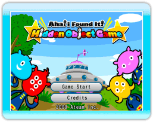
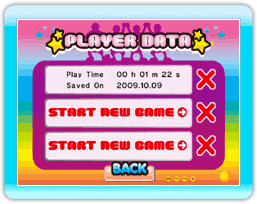
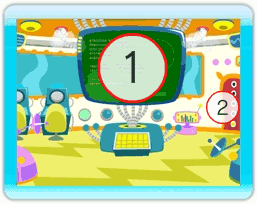

9 |
Pour commencer |
 |
|

Placez le curseur sur l'une des rubriques ci-dessous et sélectionnez-la en appuyant sur le bouton A.
Écran PLAYER DATA  Selectionnez 'START NEW GAME' lorsque vous jouez pour la première fois. La présentation du jeu va alors commencer. S'il y a des données sauvegardées, vous pouvez cliquer dessus pour continuer une partie précédente. Pour effacer une sauvegarde, appuyez sur le 'X' en rouge sur la droite. *Votre progression est automatiquement sauvegardée après avoir terminé un niveau. Écran d'introduction Lorsque vous jouez pour la première fois, les personnages et les options de jeu vous serons présentés. Après cela, alignez le curseur au-dessus de l'une des rubriques ci-dessous et sélectionnez-la en appuyant sur le bouton A.  1: Moniteur Accéder à l'écran de sélection du niveau. 2: Porte du vaisseau Retourner à l'écran titre. |
 |
 |
 |